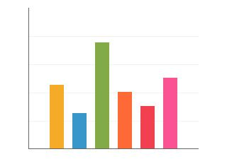
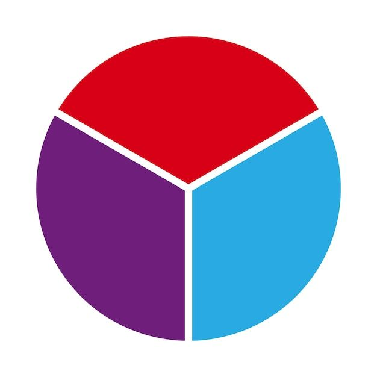
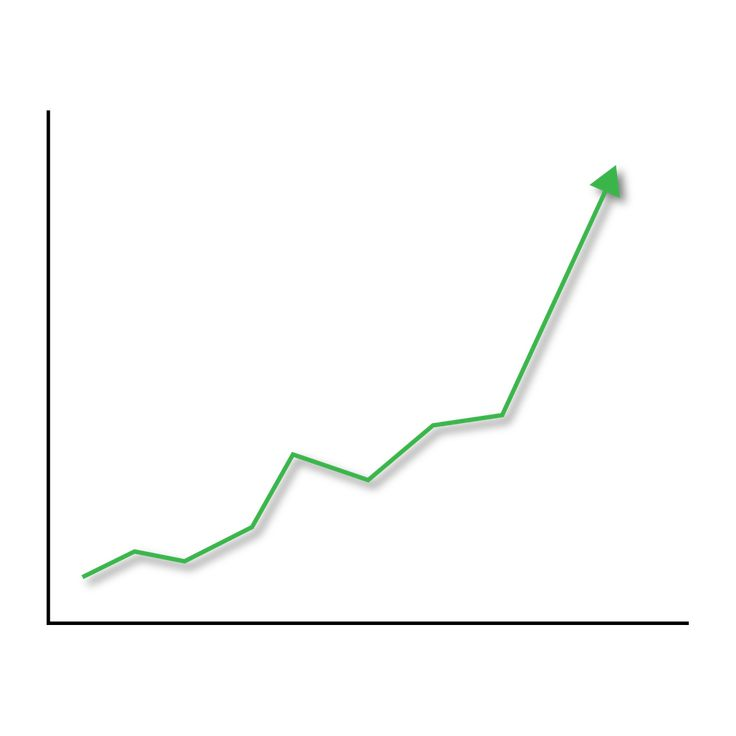

📊 Pilih Jenis Diagram
Yuk pilih diagram yang ingin kamu pelajari dan pahami data dengan cara seru!

Diagram Batang
Data dalam bentuk batang vertikal atau horizontal.

Diagram Lingkaran
Menampilkan proporsi bagian dari keseluruhan.

Diagram Garis
Menampilkan perubahan data seiring waktu.